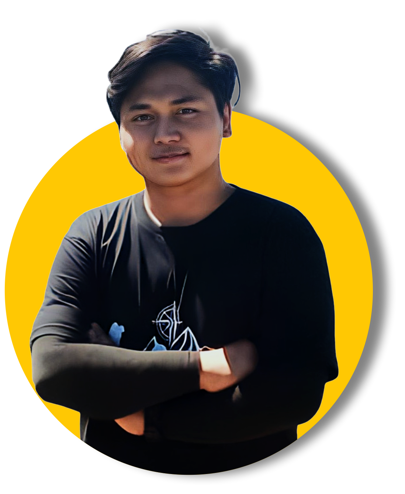

hallo, I'm..
Muhammad Zaenaldi Musthofa
Graphic Design | UI/UX DesignI am an experienced UI/UX and graphic designer with a talent for creating intuitive user experiences and visually appealing designs. With a background in interactive and graphic design, I have successfully developed numerous projects that blend modern aesthetics with high functionality.
